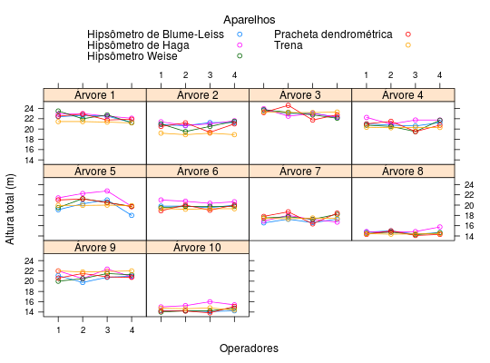
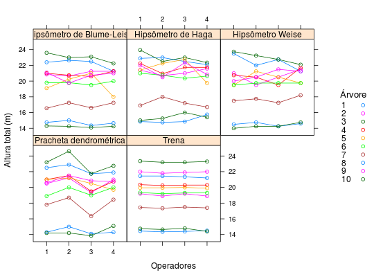

Dados de um experimento fatorial 5 \(\times\) 4, em delineamento de blocos casualizados, sobre e influência do aparelho e do operador na determinação de altura de árvores, aos 7 anos de idade, de Eucaliptus saligna (Simões, Mello e Barbin, 1967).
Cinco aparelhos ou instrumentos de mensuração (hipsômetro de Blume-Leiss, hipsômetro de Haga, hipsômetro Weise, prancheta dendrométrica e trena) foram testados por 4 operadores resultando em 20 combinações. Diante de uma árvore era sorteado um número no universo de 1 a 20 que representava um operador \(\times\) aparelho. Cada operador com um aparelho efetuava duas medições consecutivas da mesma árvore (bloco) e a média era registrada. O sorteio continuava até as combinações fossem realizadas na árvore, então passava-se para a próxima árvore. Evidentemente, a medida feita com o trena ficava sempre para o final (testemunha).
Um data.frame com 200 observações e 4 variáveis, em
que
aparoperblocaltBARBIN (2013), pág. 114.
Simões, J. W., Mello, H. A., Barbin, D. (1967). Eficiência dos aparelhos e e influência do operador na medição de altura total de árvores. O Solo, Piracicaba, v.2, p.57-63.
library(latticeExtra) data(BarbinPg114)#> Warning: data set ‘BarbinPg114’ not foundstr(BarbinPg114)#> 'data.frame': 200 obs. of 4 variables: #> $ apar: Factor w/ 5 levels "Hipsômetro de Blume-Leiss",..: 1 2 3 4 5 1 2 3 4 5 ... #> $ oper: Factor w/ 4 levels "1","2","3","4": 1 1 1 1 1 2 2 2 2 2 ... #> $ bloc: Factor w/ 10 levels "1","2","3","4",..: 1 1 1 1 1 1 1 1 1 1 ... #> $ alt : num 22.4 22.9 23.5 22.5 21.4 ...xyplot(alt ~ oper | bloc, data = BarbinPg114, groups = apar, type = "b", as.table = TRUE, auto.key = list(space = "top", columns = 2, title = "Aparelhos", cex.title = 1.1), strip = strip.custom(strip.names = TRUE, sep = " ", var.name = "Árvore"), xlab = "Operadores", ylab = "Altura total (m)")layer(panel.abline(h = mean(y), lwd = 2))#> Error in mean(y): object 'y' not foundxyplot(alt ~ oper | apar, data = BarbinPg114, groups = bloc, type = "b", as.table = TRUE, auto.key = list(space = "right", title = "Árvore", cex.title = 1.1), xlab = "Operadores", ylab = "Altura total (m)")